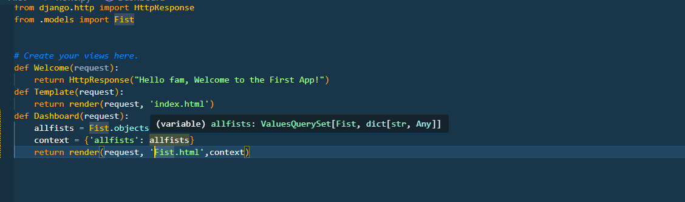
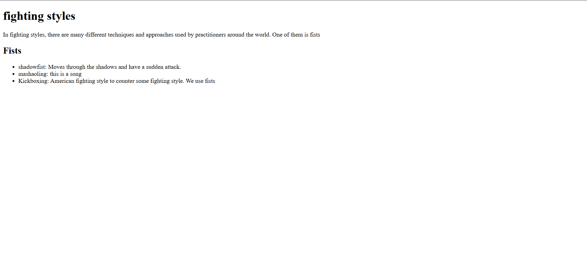
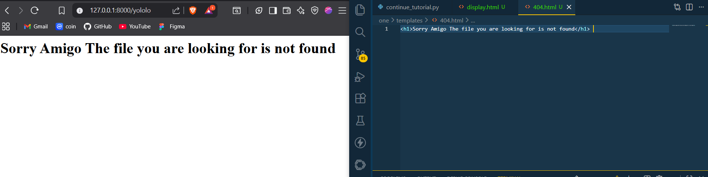
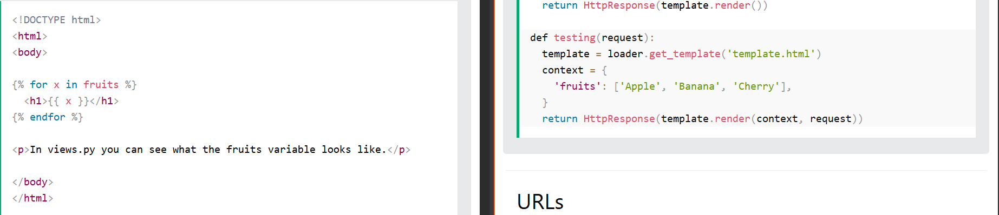

IThere is a way of displaying data of a model in the template. You must first create thehmodels and other functions. Lets remind ourselves of model creation
Create a folder named templates in your app directory
Create an html file in the templates folder
In your views.py file, import the model you created and the render function from django.shortcuts
Create a function that will fetch data from the model and render it to the template you created
In your urls.py file, import the function you created in views.py and map it to a url pattern
in html file write the template code to display the data
we can also add a details button by creating a link to a detail page in the template
The process of the details is the same as the display process with addiional information and arrangements
the detail page is below

404 Errors can also be displayed . When you debug the project as false you make the project return the 404 error of the code given.
below is the code and what is shown in the template
Finally there is the testing template . Instead of getting a model you can directly list a list in the context that you want to display and display it using for loops of the context in the template. This is template testing
 that is the end of template rendering